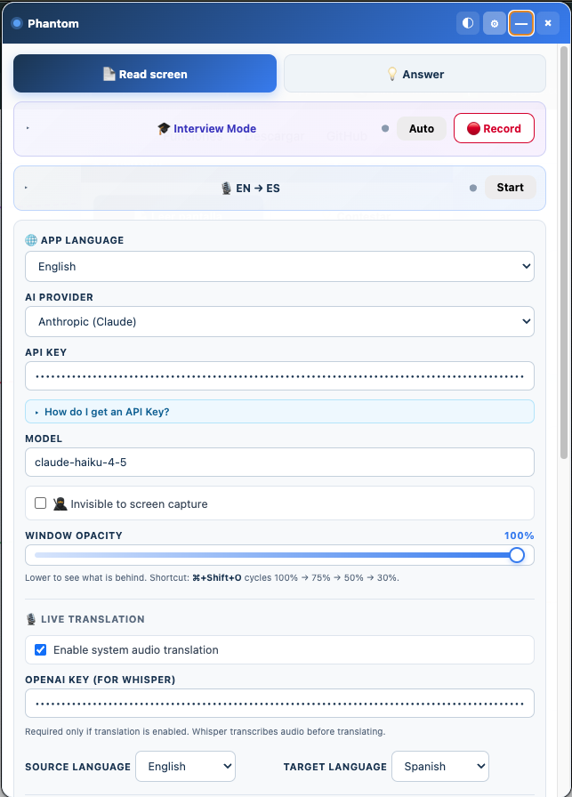

Lee tu pantalla, te dicta la respuesta a cualquier pregunta…
Pasá el mouse por cada feature para destacarla en la imagen.
Captura lo que ves y te lo resume con IA.
Escucha al entrevistador y te dicta la respuesta usando tu CV.
UI en español, inglés, portugués, francés, japonés y chino.
Guía paso a paso integrada para obtener tu API key.
No se ve en Zoom, Meet, Teams, OBS ni en screenshots.

Detecta preguntas o quizzes visibles y los resuelve.
Grabás vos cuando querés, y después pedís la respuesta.
Audio del sistema → Whisper → traducción en tiempo real.
Ajustá la opacidad para ver lo que hay detrás.
Ocultá / mostrá / analizá desde cualquier app.
Phantom vive en background. Lo invocás desde cualquier app.
Descarga directa. Sin registro. Sin tracking.
⬇ Descargar Phantom 1.1.0Doble click al .dmg → arrastrar a Applications → doble click. Sin warnings, firmado por Apple.